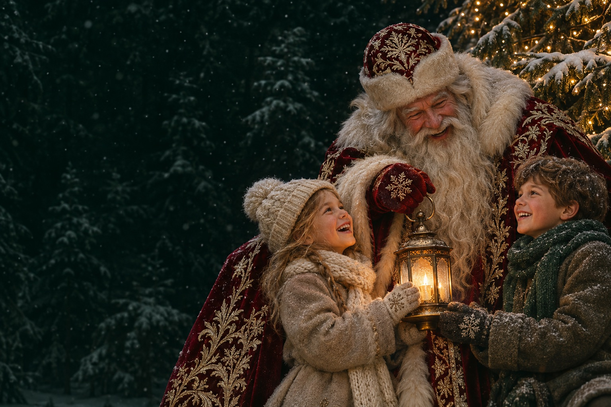

Чудо в зимнем лесу — неожиданная встреча с Дедом Морозом
Смотреть программуПрограмма праздника
Действующее лицо — Дед Мороз.
Подготовка до начала праздника
Передача подарков. За 15–20 минут до начала мероприятия родители незаметно передают подписанные подарки Деду Морозу. Он прячет их в большой мешок. Удобно положить каждый подарок в непрозрачный пакет и крупно подписать именем ребёнка.
Стоимость
За ребёнка в сборной группе
- До 1 декабря 2026 года
- 1 500 ₽
- С 1 декабря 2026 года
- 1 800 ₽
Тайминг и ход сценария
Всю программу сопровождает новогодняя музыка.
-
00:00–00:10 · 10 минут
Неожиданная встреча
Завязка. Родители ведут детей на обычную прогулку по зимнему лесу. Например, «ищем шишки для поделки» или «смотрим, кто оставил следы на снегу».
Появление. На тропинке у нарядной лесной ёлки дети замечают большой красный мешок. Из-за деревьев выходит Дед Мороз, напевая песню и огорчённо ища дорогу.
«Ого, сколько здесь ребят! А я заблудился в зимнем лесу, шёл к вам на праздник, да тропинку потерял. Вы мне поможете?»
Дети отвечают. Дед Мороз радостно приветствует их и предлагает погреться в весёлой лесной игре.
-
00:10–00:30 · 20 минут
Лесная разминка и игры
Чтобы дети согрелись и вошли в атмосферу сказки, Дед Мороз проводит три активные и простые игры на снегу.
- «Заморожу». Дед Мороз пытается дотронуться до носов, рук или ушей, а дети прячут их.
- «Сугробы и тропинки». По команде «Сугроб!» дети приседают в снег, по команде «Тропинка!» встают друг за другом и идут змейкой.
- «Снежный ком». Дети передают бутафорский мягкий снежок по кругу под музыку или считалочку. Тот, у кого в руках остался снежок, громко называет любимое зимнее блюдо или мультик.
-
00:30–00:45 · 15 минут
Кульминация. Стихи и подарки
Дед Мороз присаживается на заранее подготовленный пень.
Дети по желанию рассказывают стихи, показывают небольшой танец или просто говорят Деду Морозу «спасибо за зиму».
Дед Мороз достаёт из волшебного мешка подарки, подглядывая в список или читая имена на пакетах, и вручает каждому ребёнку подарок.
-
00:45–00:55 · 10 минут
Фотосессия и прощание
- Общее фото с Дедом Морозом у лесной ёлки.
- Семейные фотографии.
- Дед Мороз прощается, говорит, что ему пора спешить дальше по зимнему лесу к другим ребятам, и уходит по заранее подготовленной тропинке.
-
00:55–01:00 · 5 минут
Резервное время
Дети обмениваются впечатлениями с родителями, рассматривают подарки и пьют тёплый чай из термоса, который взрослые взяли с собой.